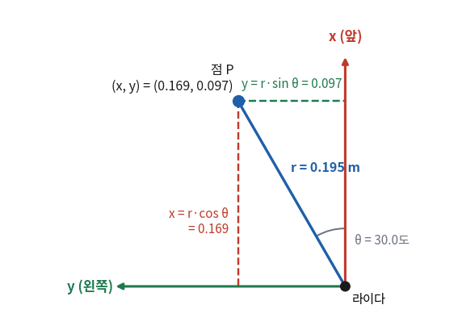
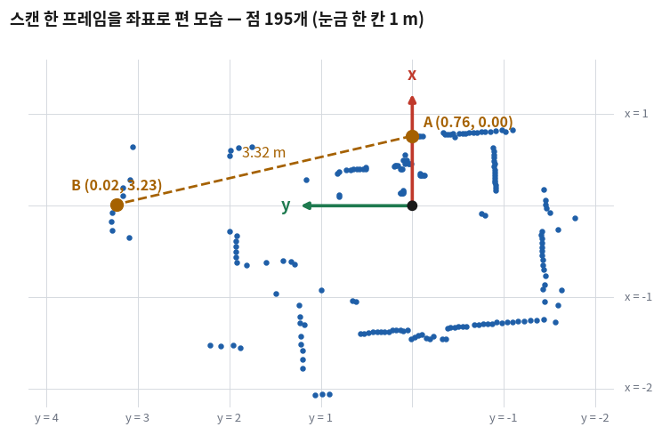
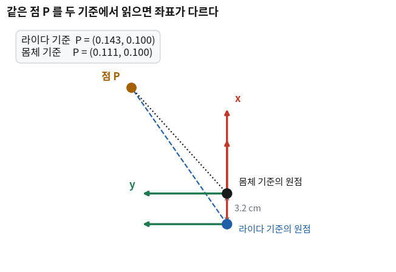

좌표계와 좌표 변환
- 라이다가 준 「이 방향으로 몇 m」 두 개만으로 두 물체 사이의 간격을 알 수 있나?
- 로봇에서 x는 어느 쪽이고 y는 어느 쪽인가? 화면 좌표와 무엇이 다른가?
- 거리와 각도를 x, y로 바꾸는 식은 무엇이고, C++에서 쓸 때 무엇을 조심하나?
- 같은 점인데 기준을 바꾸면 좌표가 달라진다. 무엇과 무엇을 하면 한 기준의 좌표를 다른 기준으로 옮길 수 있나?
24회에서 스캔의 값 하나가 「어느 방향으로 몇 m」인지를 읽어 냈고, 정면 한 방향의 거리로 로봇을 세워 봤다. 그런데 콘 트랙에서 알아야 하는 것은 한 방향의 거리가 아니다. 왼쪽 콘과 오른쪽 콘 사이가 얼마나 벌어졌는지, 그 사이의 가운데가 어디인지다. 그것은 방향과 거리를 따로 봐서는 나오지 않는다.
오늘은 스캔의 값들을 평면 위의 점 (x, y)로 편다. 식은 두 줄이고 고등학교 때 본 삼각함수다. 새 프로그램 scan_points를 24회의 cone_drive 패키지 안에 하나 더 만들어 세 단계로 키운다 —
점으로 펴고(v1), 두 점 사이를 재고(v2), 기준을 라이다에서 로봇 몸체로 옮긴다(v3).
cone_drive에 바로 이어 붙이지 않는 것은 오늘 볼 것(좌표)만 남기기 위해서다. 바퀴는 오늘 돌리지 않는다. 27회에서 둘을 합친다.
이 변환도 에이전트에게 맡기면 금방 나온다. 다만 여기에는 틀려도 그럴듯한 숫자가 나오는 자리가 둘 있다 — 각도의 단위와 좌우의 부호다. 둘 다 빌드가 잡아 주지 않고, 로봇 앞에 물건을 놓고 자로 재 봐야만 드러난다.
① 극좌표와 직교좌표 🔴 사람이 이해한다
24회 ④절에서 이 로봇은 0도 방향 0.76m에, 90도 방향 3.2m에 무언가가 있었다. 이 둘 사이는 얼마나 떨어져 있을까? 두 거리를 빼면 3.2 − 0.76 = 2.44m가 나온다. 맞는 답일까?
아니다. 둘이 같은 방향에 있을 때만 거리의 차가 간격이 된다. 한쪽은 앞에, 한쪽은 왼쪽에 있으니 둘 사이는 비스듬한 선이고, 그 길이는 2.44m보다 길다. 거꾸로 두 물체가 같은 거리에 있으면 거리의 차는 0인데, 방향이 다르면 둘은 분명히 떨어져 있다. 「방향과 거리」로 적은 위치끼리는 빼서 간격을 구할 수 없다.
1-1 정의
| 이름 | 점 하나를 무엇으로 적나 | 어디서 나오나 | 무엇에 편한가 |
|---|---|---|---|
| 극좌표 (polar coordinates) | 거리 r 과 각도 θ | 라이다가 재는 방식 그대로 — ranges[i]와 그 각도 | 「이 방향에 뭐가 있나」 |
| 직교좌표 (Cartesian coordinates) | 서로 직각인 두 축 위의 값 x 와 y | 극좌표에서 계산해 만든다 | 두 점 사이의 간격, 가운데 점, 옮기기 |
② ROS 좌표 규약 🔴 사람이 외운다
x와 y로 적으려면 어느 쪽이 x이고 어느 쪽이 +인지부터 정해야 한다. 사람마다 다르게 정하면 남의 노드가 보낸 좌표를 쓸 수 없으므로 ROS는 이것을 약속으로 못 박아 두었다.
2-1 정의
| 무엇 | 약속 | 24회에서 본 것과의 연결 |
|---|---|---|
| x | 로봇의 앞이 + | 각도 0도의 방향 |
| y | 로봇의 왼쪽이 + | 각도 90도의 방향 |
| z | 위가 + | (바닥을 달리는 로봇은 거의 쓰지 않는다) |
| 회전 | 위에서 내려다봤을 때 반시계 방향이 + | 각도가 커지는 방향. angular.z가 +이면 왼쪽으로 돈다 |
| 단위 | 길이 m · 각도 rad · 시간 s | angle_increment가 rad였던 까닭 |
🆕 처음 나오는 이름
- REP
- ROS Enhancement Proposal의 약자. ROS 커뮤니티가 합의한 표준을 번호를 붙여 모아 둔 문서들이다. 103번이 단위와 좌표 규약이다.
- y가 +이면 왼쪽
- 오늘 내내 쓰는 판정이다. 점의 y가 +이면 로봇의 왼쪽에, −이면 오른쪽에 있다. 27회에서 콘을 좌우로 나눌 때 이 한 줄을 쓴다.
③ 극좌표 → 직교좌표 (v1) 🔴 사람이 확인한다
3-1 개념 — 식 두 줄
거리 r, 각도 θ인 점을 ②절의 축 위에 놓으면 직각삼각형이 하나 생긴다. 빗변이 r이고, x축 쪽 변이 x, 그것과 직각인 변이 y다.
θ = angle_min + i × angle_increment (24회)
x = r × cos θ
y = r × sin θ
3-2 숫자를 넣어 본다
그림의 점이다. 인덱스 18, angle_min 0.0024 rad, angle_increment 0.02896 rad, 거리 0.195 m.
θ = 0.0024 + 18 × 0.02896 = 0.5237 rad (= 30.0도)
x = 0.195 × cos(0.5237) = 0.195 × 0.866 = 0.169 m 앞으로 16.9 cm
y = 0.195 × sin(0.5237) = 0.195 × 0.500 = 0.097 m 왼쪽으로 9.7 cmy가 +이니 로봇의 왼쪽이다. 각도가 0~180도 사이이면 sin이 +라서 y가 +, 180~360도 사이이면 y가 −가 된다. 좌우는 따로 따지지 않아도 부호로 나온다.
3-3 1단계 (v1) — 스캔 전체를 점으로 편다
24회의 cone_drive 패키지에 실행 파일을 하나 더 만든다. ~/ros_ws/src/cone_drive/src/scan_points.cpp를 새로 만들고, CMakeLists.txt에 석 줄을 더한다.
# 만든 실행 파일을 ros2 run 이 찾는 자리에 설치한다
install(TARGETS cone_drive
DESTINATION lib/${PROJECT_NAME})# 25회 — 실행 파일 scan_points. LaserScan 을 받아 점의 좌표(x, y)로 편다
add_executable(scan_points src/scan_points.cpp)
target_link_libraries(scan_points PRIVATE
rclcpp::rclcpp ${sensor_msgs_TARGETS})
# 만든 실행 파일을 ros2 run 이 찾는 자리에 설치한다
install(TARGETS cone_drive scan_points
DESTINATION lib/${PROJECT_NAME})점 하나를 담을 타입을 만들고, 식 두 줄을 함수로 옮긴다.
// 평면 위의 점 하나 (m). x 는 앞, y 는 왼쪽
struct Point
{
double x;
double y;
}; // 스캔의 쓸 수 있는 값을 전부 점으로 편다 — x = r·cos θ, y = r·sin θ
std::vector<Point> to_points(const sensor_msgs::msg::LaserScan & scan) const
{
std::vector<Point> points;
points.reserve(scan.ranges.size()); // 많아야 이만큼이다 — 재할당을 피한다 (12회)
for (std::size_t i = 0; i < scan.ranges.size(); ++i) {
const double r = scan.ranges[i];
if (!is_valid(scan.ranges[i])) {
continue;
}
const double theta = scan.angle_min + i * scan.angle_increment; // rad — cos · sin 은 라디안을 받는다
points.push_back(Point{r * std::cos(theta), r * std::sin(theta)});
}
return points;
}
거르기가 변환보다 먼저다. NaN에 cos을 곱하면 NaN인 점이 생기고, 그 점은 뒤의 모든 계산을 NaN으로 물들인다. is_valid는 24회 것 그대로다.
콜백에서는 펴진 점들 가운데 라이다에서 가장 가까운 것을 13회의 std::min_element로 찾아 찍는다.
// 원점(라이다)에서 가장 가까운 점 — 거리는 std::hypot(x, y)
const auto nearest = std::min_element(
points.begin(), points.end(),
[](const Point & a, const Point & b) { return std::hypot(a.x, a.y) < std::hypot(b.x, b.y); });🆕 이 코드에서 처음 나오는 것
std::cos(theta)·std::sin(theta)<cmath>의 삼각함수다. 인자는 라디안이다. 30도의 cos을 구하려고std::cos(30)이라고 쓰면 「30 라디안」의 cos이 나온다 — 오류 없이 엉뚱한 값이다. 메시지의 각도가 이미 rad라서angle_min + i * angle_increment를 그대로 넣으면 된다.std::hypot(a, b)- √(a² + b²)를 돌려준다. 직각삼각형의 빗변(hypotenuse)에서 온 이름이다. 원점에서 점 (x, y)까지의 거리가
std::hypot(x, y)다. struct Point·Point{a, b}- 9회의 클래스와 같은 것인데 멤버가 처음부터
public이다. 함수 없이 값 두 개를 묶기만 할 때struct를 쓴다.Point{a, b}는 x에 a, y에 b를 넣은 점 하나를 그 자리에서 만든다. - 람다의 인자
(const Point & a, const Point & b) - 14회의 람다다.
min_element에게 「둘 중 어느 쪽이 더 작은가」를 알려 준다. 여기서는 원점에서 더 가까운 쪽이 작은 쪽이다.
전체 코드 — cone_drive/ (scan_points 1단계 · v1. cone_drive.cpp · package.xml 은 24회 v5 그대로)
빌드해서 돌리는 법: cd ~/ros_ws && colcon build --packages-select cone_drive && source install/setup.bash && ros2 run cone_drive scan_points
// 25회 scan_points — v1 (1단계: 거리와 각도를 좌표 x, y 로 편다 — 가장 가까운 점을 찍는다)
#include <algorithm>
#include <cmath>
#include <memory>
#include <vector>
#include "rclcpp/rclcpp.hpp"
#include "sensor_msgs/msg/laser_scan.hpp"
// 평면 위의 점 하나 (m). x 는 앞, y 는 왼쪽
struct Point
{
double x;
double y;
};
class ScanPoints : public rclcpp::Node
{
public:
ScanPoints()
: Node("scan_points")
{
// 믿을 수 있는 거리 범위 — 라이다 사양표에서 가져온다 (24회. LDS-02 기준)
this->declare_parameter("range_min", 0.16);
this->declare_parameter("range_max", 8.0);
range_min_ = this->get_parameter("range_min").as_double();
range_max_ = this->get_parameter("range_max").as_double();
scan_sub_ = this->create_subscription<sensor_msgs::msg::LaserScan>(
"/scan", rclcpp::SensorDataQoS(),
[this](sensor_msgs::msg::LaserScan::ConstSharedPtr msg) { on_scan(msg); });
}
private:
// /scan 이 올 때마다 불린다 — 점으로 펴고, 가장 가까운 점을 1초에 한 번 찍는다
void on_scan(sensor_msgs::msg::LaserScan::ConstSharedPtr msg)
{
const std::vector<Point> points = to_points(*msg);
if (points.empty()) {
RCLCPP_WARN_THROTTLE(this->get_logger(), *this->get_clock(), 1000, "쓸 수 있는 점이 없습니다");
return;
}
// 원점(라이다)에서 가장 가까운 점 — 거리는 std::hypot(x, y)
const auto nearest = std::min_element(
points.begin(), points.end(),
[](const Point & a, const Point & b) { return std::hypot(a.x, a.y) < std::hypot(b.x, b.y); });
RCLCPP_INFO_THROTTLE(this->get_logger(), *this->get_clock(), 1000,
"점 %zu개 · 가장 가까운 점 x = %.3f m, y = %.3f m (거리 %.3f m)",
points.size(), nearest->x, nearest->y, std::hypot(nearest->x, nearest->y));
}
// 쓸 수 있는 거리인가 — NaN · inf 가 아니고 사양 범위 안에 있다 (24회)
bool is_valid(float r) const
{
return std::isfinite(r) && r >= range_min_ && r <= range_max_;
}
// 스캔의 쓸 수 있는 값을 전부 점으로 편다 — x = r·cos θ, y = r·sin θ
std::vector<Point> to_points(const sensor_msgs::msg::LaserScan & scan) const
{
std::vector<Point> points;
points.reserve(scan.ranges.size()); // 많아야 이만큼이다 — 재할당을 피한다 (12회)
for (std::size_t i = 0; i < scan.ranges.size(); ++i) {
const double r = scan.ranges[i];
if (!is_valid(scan.ranges[i])) {
continue;
}
const double theta = scan.angle_min + i * scan.angle_increment; // rad — cos · sin 은 라디안을 받는다
points.push_back(Point{r * std::cos(theta), r * std::sin(theta)});
}
return points;
}
double range_min_ = 0.0; // 파라미터 range_min 에서 읽는다 (m)
double range_max_ = 0.0; // 파라미터 range_max 에서 읽는다 (m)
rclcpp::Subscription<sensor_msgs::msg::LaserScan>::SharedPtr scan_sub_;
};
int main(int argc, char ** argv)
{
rclcpp::init(argc, argv);
auto node = std::make_shared<ScanPoints>();
rclcpp::spin(node); // 구독 콜백은 이 안에서 불린다
rclcpp::shutdown();
return 0;
}cmake_minimum_required(VERSION 3.8)
project(cone_drive)
if(CMAKE_COMPILER_IS_GNUCXX OR CMAKE_CXX_COMPILER_ID MATCHES "Clang")
add_compile_options(-Wall -Wextra -Wpedantic)
endif()
# find dependencies
find_package(ament_cmake REQUIRED)
find_package(rclcpp REQUIRED)
find_package(sensor_msgs REQUIRED)
find_package(geometry_msgs REQUIRED)
# 24회 — 실행 파일 cone_drive. LaserScan(sensor_msgs)을 받는다
# 24회 5단계 — TwistStamped(geometry_msgs)를 보낸다
add_executable(cone_drive src/cone_drive.cpp)
target_link_libraries(cone_drive PRIVATE
rclcpp::rclcpp ${sensor_msgs_TARGETS} ${geometry_msgs_TARGETS})
# 25회 — 실행 파일 scan_points. LaserScan 을 받아 점의 좌표(x, y)로 편다
add_executable(scan_points src/scan_points.cpp)
target_link_libraries(scan_points PRIVATE
rclcpp::rclcpp ${sensor_msgs_TARGETS})
# 만든 실행 파일을 ros2 run 이 찾는 자리에 설치한다
install(TARGETS cone_drive scan_points
DESTINATION lib/${PROJECT_NAME})
if(BUILD_TESTING)
find_package(ament_lint_auto REQUIRED)
# the following line skips the linter which checks for copyrights
# comment the line when a copyright and license is added to all source files
set(ament_cmake_copyright_FOUND TRUE)
# the following line skips cpplint (only works in a git repo)
# comment the line when this package is in a git repo and when
# a copyright and license is added to all source files
set(ament_cmake_cpplint_FOUND TRUE)
ament_lint_auto_find_test_dependencies()
endif()
ament_package()3-4 실제로 나온 출력
⌨ 빌드하고 돌리기 — bringup이 떠 있는 채로, 터미널 2에서
$ cd ~/ros_ws
$ colcon build --packages-select cone_drive
$ ros2 run cone_drive scan_points패키지는 cone_drive 그대로이고 실행 파일 이름이 scan_points다(17회 — 패키지 하나에 실행 파일 여럿). 패키지 자체는 24회에 이미 알려 두었으므로 source는 다시 치지 않아도 된다.
$ ros2 run cone_drive scan_points
[INFO] [1794550528.511304476] [scan_points]: 점 195개 · 가장 가까운 점 x = 0.143 m, y = 0.101 m (거리 0.175 m)
[INFO] [1794550529.551192701] [scan_points]: 점 195개 · 가장 가까운 점 x = 0.143 m, y = 0.099 m (거리 0.174 m)
[INFO] [1794550530.611134827] [scan_points]: 점 194개 · 가장 가까운 점 x = 0.142 m, y = 0.100 m (거리 0.174 m)
[INFO] [1794550531.651417575] [scan_points]: 점 187개 · 가장 가까운 점 x = 0.144 m, y = 0.100 m (거리 0.175 m)값 215개쯤 가운데 190개 안팎이 점이 됐다. 가장 가까운 것은 앞으로 14cm, 왼쪽으로 10cm 자리에 있다. 「35도 방향 17.5cm」보다 손으로 가리키기 쉬운 말이 됐다. x와 y가 mm 단위에서만 흔들리는 것도 본다 — 가까운 점이라 그렇다(23회).

④ 두 점 사이의 거리 (v2) 🟡 맡기되 확인
①절의 물음으로 돌아간다. 0도 쪽의 점 A와 90도 쪽의 점 B 사이는 얼마인가? 이제 둘 다 좌표가 있다.
4-1 개념 — 식
d = √( (x₁ − x₂)² + (y₁ − y₂)² )x끼리의 차와 y끼리의 차를 두 변으로 하는 직각삼각형의 빗변이다. 직교좌표에서는 같은 축의 값끼리 빼는 것이 뜻을 가진다 — 극좌표에서 안 되던 것이 이것이다.
4-2 숫자를 넣어 본다
A = (0.763, 0.002) 0도 방향, 거리 0.763 m
B = (0.015, 3.234) 90도 방향, 거리 3.234 m
x 의 차 = 0.763 − 0.015 = 0.748
y 의 차 = 0.002 − 3.234 = −3.232
d = √( 0.748² + 3.232² ) = √( 0.560 + 10.446 ) = √11.006 = 3.318 m4-3 2단계 (v2) — 두 방향의 점과 그 사이 거리
보고 싶은 두 방향을 파라미터 angle_a_deg·angle_b_deg로 받는다(기본 0도와 90도). 그 방향에 가장 가까운 값을 24회의 index_near와 같은 식으로 찾아 점으로 바꾼다.
그 값을 못 쟀으면 점이 없으므로 std::optional<Point>를 돌려준다.
// 두 점 사이의 거리 — √((x₁ − x₂)² + (y₁ − y₂)²)
double distance(const Point & a, const Point & b) const
{
return std::hypot(a.x - b.x, a.y - b.y);
}
// 각도 deg(도)에 가장 가까운 값을 점으로 — 그 값을 못 쟀으면 「없다」
std::optional<Point> point_at(const sensor_msgs::msg::LaserScan & scan, double deg) const
{
const double rad = deg * M_PI / 180.0;
const long n = static_cast<long>(scan.ranges.size());
long i = std::lround((rad - scan.angle_min) / scan.angle_increment) % n; // 24회의 index_near
if (i < 0) {
i += n;
}
const double r = scan.ranges[i];
if (!is_valid(scan.ranges[i])) {
return std::nullopt;
}
const double theta = scan.angle_min + i * scan.angle_increment;
return Point{r * std::cos(theta), r * std::sin(theta)};
} const std::vector<Point> points = to_points(*msg);
if (points.empty()) {
RCLCPP_WARN_THROTTLE(this->get_logger(), *this->get_clock(), 1000, "쓸 수 있는 점이 없습니다");
return;
}
// 원점(라이다)에서 가장 가까운 점 — 거리는 std::hypot(x, y)
const auto nearest = std::min_element(
points.begin(), points.end(),
[](const Point & a, const Point & b) { return std::hypot(a.x, a.y) < std::hypot(b.x, b.y); });
RCLCPP_INFO_THROTTLE(this->get_logger(), *this->get_clock(), 1000,
"점 %zu개 · 가장 가까운 점 x = %.3f m, y = %.3f m (거리 %.3f m)",
points.size(), nearest->x, nearest->y, std::hypot(nearest->x, nearest->y)); const std::optional<Point> a = point_at(*msg, angle_a_deg_);
const std::optional<Point> b = point_at(*msg, angle_b_deg_);
if (!a || !b) {
RCLCPP_WARN_THROTTLE(this->get_logger(), *this->get_clock(), 1000,
"%.0f도 또는 %.0f도 방향을 못 봤습니다", angle_a_deg_, angle_b_deg_);
return;
}
RCLCPP_INFO_THROTTLE(this->get_logger(), *this->get_clock(), 1000,
"A(%.0f도) x = %.3f, y = %.3f · B(%.0f도) x = %.3f, y = %.3f · 두 점 사이 %.3f m",
angle_a_deg_, a->x, a->y, angle_b_deg_, b->x, b->y, distance(*a, *b));
이 단계는 「두 점」만 보므로 스캔 전체를 펴던 to_points는 뺐다. 27회에서 콘을 찾을 때 다시 가져온다.
전체 코드 — cone_drive/src/scan_points.cpp (2단계 · v2. CMakeLists.txt 는 v1 그대로)
빌드해서 돌리는 법: cd ~/ros_ws && colcon build --packages-select cone_drive && ros2 run cone_drive scan_points
// 25회 scan_points — v2 (2단계: 두 방향에 있는 점의 좌표를 구하고, 두 점 사이의 거리를 잰다)
#include <cmath>
#include <memory>
#include <optional>
#include <vector>
#include "rclcpp/rclcpp.hpp"
#include "sensor_msgs/msg/laser_scan.hpp"
// 평면 위의 점 하나 (m). x 는 앞, y 는 왼쪽
struct Point
{
double x;
double y;
};
class ScanPoints : public rclcpp::Node
{
public:
ScanPoints()
: Node("scan_points")
{
// 믿을 수 있는 거리 범위 — 라이다 사양표에서 가져온다 (24회. LDS-02 기준)
this->declare_parameter("range_min", 0.16);
this->declare_parameter("range_max", 8.0);
range_min_ = this->get_parameter("range_min").as_double();
range_max_ = this->get_parameter("range_max").as_double();
// 좌표를 볼 두 방향 (도) — 물건을 놓은 방향으로 바꿔 가며 쓴다
this->declare_parameter("angle_a_deg", 0.0);
this->declare_parameter("angle_b_deg", 90.0);
angle_a_deg_ = this->get_parameter("angle_a_deg").as_double();
angle_b_deg_ = this->get_parameter("angle_b_deg").as_double();
scan_sub_ = this->create_subscription<sensor_msgs::msg::LaserScan>(
"/scan", rclcpp::SensorDataQoS(),
[this](sensor_msgs::msg::LaserScan::ConstSharedPtr msg) { on_scan(msg); });
}
private:
// /scan 이 올 때마다 불린다 — 두 방향의 점과 그 사이 거리를 1초에 한 번 찍는다
void on_scan(sensor_msgs::msg::LaserScan::ConstSharedPtr msg)
{
const std::optional<Point> a = point_at(*msg, angle_a_deg_);
const std::optional<Point> b = point_at(*msg, angle_b_deg_);
if (!a || !b) {
RCLCPP_WARN_THROTTLE(this->get_logger(), *this->get_clock(), 1000,
"%.0f도 또는 %.0f도 방향을 못 봤습니다", angle_a_deg_, angle_b_deg_);
return;
}
RCLCPP_INFO_THROTTLE(this->get_logger(), *this->get_clock(), 1000,
"A(%.0f도) x = %.3f, y = %.3f · B(%.0f도) x = %.3f, y = %.3f · 두 점 사이 %.3f m",
angle_a_deg_, a->x, a->y, angle_b_deg_, b->x, b->y, distance(*a, *b));
}
// 두 점 사이의 거리 — √((x₁ − x₂)² + (y₁ − y₂)²)
double distance(const Point & a, const Point & b) const
{
return std::hypot(a.x - b.x, a.y - b.y);
}
// 각도 deg(도)에 가장 가까운 값을 점으로 — 그 값을 못 쟀으면 「없다」
std::optional<Point> point_at(const sensor_msgs::msg::LaserScan & scan, double deg) const
{
const double rad = deg * M_PI / 180.0;
const long n = static_cast<long>(scan.ranges.size());
long i = std::lround((rad - scan.angle_min) / scan.angle_increment) % n; // 24회의 index_near
if (i < 0) {
i += n;
}
const double r = scan.ranges[i];
if (!is_valid(scan.ranges[i])) {
return std::nullopt;
}
const double theta = scan.angle_min + i * scan.angle_increment;
return Point{r * std::cos(theta), r * std::sin(theta)};
}
// 쓸 수 있는 거리인가 — NaN · inf 가 아니고 사양 범위 안에 있다 (24회)
bool is_valid(float r) const
{
return std::isfinite(r) && r >= range_min_ && r <= range_max_;
}
double range_min_ = 0.0; // 파라미터 range_min 에서 읽는다 (m)
double range_max_ = 0.0; // 파라미터 range_max 에서 읽는다 (m)
double angle_a_deg_ = 0.0; // 파라미터 angle_a_deg 에서 읽는다 (도)
double angle_b_deg_ = 0.0; // 파라미터 angle_b_deg 에서 읽는다 (도)
rclcpp::Subscription<sensor_msgs::msg::LaserScan>::SharedPtr scan_sub_;
};
int main(int argc, char ** argv)
{
rclcpp::init(argc, argv);
auto node = std::make_shared<ScanPoints>();
rclcpp::spin(node); // 구독 콜백은 이 안에서 불린다
rclcpp::shutdown();
return 0;
}실제로 나온 출력이다. 둘째는 B를 180도(뒤)로 바꿔 켠 것이다.
$ ros2 run cone_drive scan_points
[INFO] [1794550549.562252084] [scan_points]: A(0도) x = 0.765, y = -0.018 · B(90도) x = -0.044, y = 3.189 · 두 점 사이 3.307 m
[INFO] [1794550550.600949824] [scan_points]: A(0도) x = 0.763, y = 0.000 · B(90도) x = 0.035, y = 3.268 · 두 점 사이 3.348 m
[INFO] [1794550551.641009000] [scan_points]: A(0도) x = 0.761, y = 0.008 · B(90도) x = -0.029, y = 3.195 · 두 점 사이 3.284 m
$ ros2 run cone_drive scan_points --ros-args -p angle_a_deg:=0.0 -p angle_b_deg:=180.0
[INFO] [1794550553.351190713] [scan_points]: A(0도) x = 0.765, y = -0.015 · B(180도) x = -1.467, y = 0.000 · 두 점 사이 2.232 m
[INFO] [1794550554.391418676] [scan_points]: A(0도) x = 0.765, y = -0.010 · B(180도) x = -1.410, y = 0.012 · 두 점 사이 2.175 m⑤ 2차원 회전과 평행이동 (v3) 🔴 사람이 이해한다
지금까지의 좌표는 전부 라이다를 원점으로 한 것이다. 그런데 로봇이 도는 중심은 라이다가 아니라 두 바퀴 사이의 가운데다. 터틀봇3 버거의 라이다는 그 가운데보다 3.2cm 뒤에 달려 있다. 「콘이 내 왼쪽 30cm에 있다」를 로봇 몸체 기준으로 말하려면 좌표를 옮겨야 한다.
5-1 개념 — 좌표계(coordinate frame)
좌표계(coordinate frame)는 원점 하나와 축의 방향을 정해 놓은 기준이다. ROS에서는 흔히 줄여서 프레임이라고 부른다. 같은 점이라도 어느 좌표계에서 읽느냐에 따라 좌표가 달라진다. 점이 움직인 것이 아니라 읽는 기준이 다른 것이다.

5-2 개념 — 옮기는 방법은 둘의 조합이다
한 좌표계의 좌표를 다른 좌표계의 좌표로 바꾸는 일을 좌표 변환(coordinate transformation)이라고 한다. 평면에서는 두 가지를 차례로 하면 된다.
(1) 회전 — 두 좌표계의 축이 φ 만큼 틀어져 있으면 그만큼 돌린다
x′ = x·cos φ − y·sin φ
y′ = x·sin φ + y·cos φ
(2) 평행이동 — 두 원점이 (tx, ty) 만큼 떨어져 있으면 그만큼 민다
x″ = x′ + tx
y″ = y′ + ty여기서 φ와 (tx, ty)는 옮겨 갈 좌표계에서 본, 원래 좌표계의 방향과 자리다. 우리 경우에는 「몸체에서 본 라이다」 — 돌아가지 않았고(φ = 0), 3.2cm 뒤에 있다(tx = −0.032, ty = 0).
5-3 숫자를 넣어 본다
라이다 기준 P = (0.143, 0.100), φ = 0, (tx, ty) = (−0.032, 0)
(1) 회전 cos 0 = 1, sin 0 = 0 → x′ = 0.143, y′ = 0.100 (그대로)
(2) 평행이동 → x″ = 0.143 − 0.032 = 0.111
y″ = 0.100 + 0 = 0.100
몸체 기준 P = (0.111, 0.100)라이다가 뒤에 있으니, 라이다가 「14.3cm 앞」이라고 본 점은 몸체 가운데에서는 「11.1cm 앞」이다. 부호가 헷갈릴 때는 이렇게 말로 확인한다 — 뒤에서 본 것이 더 멀리 보인다. 회전이 들어가는 경우도 하나 해 본다. 라이다를 거꾸로(180도 돌려) 달았다고 하자. cos 180° = −1, sin 180° = 0이다.
라이다 기준 A = (0.762, 0.006), φ = 180도, (tx, ty) = (−0.032, 0)
(1) 회전 x′ = 0.762·(−1) − 0.006·0 = −0.762
y′ = 0.762·0 + 0.006·(−1) = −0.006
(2) 평행이동 x″ = −0.762 − 0.032 = −0.794, y″ = −0.006
몸체 기준 A = (−0.794, −0.006) 라이다가 「앞」이라고 본 것이 실제로는 로봇의 뒤에 있다5-4 3단계 (v3) — 라이다 기준에서 몸체 기준으로
파라미터 셋(lidar_x · lidar_y · lidar_yaw_deg)을 더하고, 5-2의 식을 함수 하나로 옮긴다.
// 라이다 기준의 점을 로봇 몸체 기준으로 옮긴다 — 라이다가 돌아간 만큼 돌리고, 라이다가 있는 자리만큼 민다
Point to_body(const Point & p) const
{
const double c = std::cos(lidar_yaw_);
const double s = std::sin(lidar_yaw_);
const double x_rotated = p.x * c - p.y * s; // 회전
const double y_rotated = p.x * s + p.y * c;
return Point{x_rotated + lidar_x_, y_rotated + lidar_y_}; // 평행이동
} RCLCPP_INFO_THROTTLE(this->get_logger(), *this->get_clock(), 1000,
"A(%.0f도) x = %.3f, y = %.3f · B(%.0f도) x = %.3f, y = %.3f · 두 점 사이 %.3f m",
angle_a_deg_, a->x, a->y, angle_b_deg_, b->x, b->y, distance(*a, *b)); const Point a_body = to_body(*a); // 같은 점을 로봇 몸체 기준으로
const Point b_body = to_body(*b);
RCLCPP_INFO_THROTTLE(this->get_logger(), *this->get_clock(), 1000,
"라이다 기준 A (%.3f, %.3f) B (%.3f, %.3f) 사이 %.3f m · 몸체 기준 A (%.3f, %.3f) B (%.3f, %.3f) 사이 %.3f m",
a->x, a->y, b->x, b->y, distance(*a, *b),
a_body.x, a_body.y, b_body.x, b_body.y, distance(a_body, b_body));🆕 이 코드에서 처음 나오는 것
- yaw (요)
- 위에서 내려다봤을 때 좌우로 도는 회전, 곧 z축 둘레의 회전을 가리키는 이름이다. 바닥을 달리는 로봇의 방향은 이 각 하나로 적는다. 파라미터는 사람이 읽기 쉽게 도(
lidar_yaw_deg)로 받고, 생성자에서 rad로 바꿔lidar_yaw_에 넣어 둔다. - 회전 뒤에 평행이동
- 순서가 있다. 먼저 돌리고 나서 민다. 거꾸로 하면 민 것까지 같이 돌아가 다른 자리가 된다.
전체 코드 — cone_drive/src/scan_points.cpp (3단계 · v3 완성본. 26회가 여기서 이어 간다)
빌드해서 돌리는 법: cd ~/ros_ws && colcon build --packages-select cone_drive && ros2 run cone_drive scan_points
// 25회 scan_points — v3 (3단계: 회전과 평행이동 — 라이다 기준 좌표를 로봇 몸체 기준으로 옮긴다)
#include <cmath>
#include <memory>
#include <optional>
#include <vector>
#include "rclcpp/rclcpp.hpp"
#include "sensor_msgs/msg/laser_scan.hpp"
// 평면 위의 점 하나 (m). x 는 앞, y 는 왼쪽
struct Point
{
double x;
double y;
};
class ScanPoints : public rclcpp::Node
{
public:
ScanPoints()
: Node("scan_points")
{
// 믿을 수 있는 거리 범위 — 라이다 사양표에서 가져온다 (24회. LDS-02 기준)
this->declare_parameter("range_min", 0.16);
this->declare_parameter("range_max", 8.0);
range_min_ = this->get_parameter("range_min").as_double();
range_max_ = this->get_parameter("range_max").as_double();
// 좌표를 볼 두 방향 (도) — 물건을 놓은 방향으로 바꿔 가며 쓴다
this->declare_parameter("angle_a_deg", 0.0);
this->declare_parameter("angle_b_deg", 90.0);
angle_a_deg_ = this->get_parameter("angle_a_deg").as_double();
angle_b_deg_ = this->get_parameter("angle_b_deg").as_double();
// 로봇 몸체에서 본 라이다의 자리와 방향 — 터틀봇3 버거는 3.2 cm 뒤에, 돌아가지 않고 달려 있다
this->declare_parameter("lidar_x", -0.032);
this->declare_parameter("lidar_y", 0.0);
this->declare_parameter("lidar_yaw_deg", 0.0);
lidar_x_ = this->get_parameter("lidar_x").as_double();
lidar_y_ = this->get_parameter("lidar_y").as_double();
lidar_yaw_ = this->get_parameter("lidar_yaw_deg").as_double() * M_PI / 180.0;
scan_sub_ = this->create_subscription<sensor_msgs::msg::LaserScan>(
"/scan", rclcpp::SensorDataQoS(),
[this](sensor_msgs::msg::LaserScan::ConstSharedPtr msg) { on_scan(msg); });
}
private:
// /scan 이 올 때마다 불린다 — 두 방향의 점과 그 사이 거리를 1초에 한 번 찍는다
void on_scan(sensor_msgs::msg::LaserScan::ConstSharedPtr msg)
{
const std::optional<Point> a = point_at(*msg, angle_a_deg_);
const std::optional<Point> b = point_at(*msg, angle_b_deg_);
if (!a || !b) {
RCLCPP_WARN_THROTTLE(this->get_logger(), *this->get_clock(), 1000,
"%.0f도 또는 %.0f도 방향을 못 봤습니다", angle_a_deg_, angle_b_deg_);
return;
}
const Point a_body = to_body(*a); // 같은 점을 로봇 몸체 기준으로
const Point b_body = to_body(*b);
RCLCPP_INFO_THROTTLE(this->get_logger(), *this->get_clock(), 1000,
"라이다 기준 A (%.3f, %.3f) B (%.3f, %.3f) 사이 %.3f m · 몸체 기준 A (%.3f, %.3f) B (%.3f, %.3f) 사이 %.3f m",
a->x, a->y, b->x, b->y, distance(*a, *b),
a_body.x, a_body.y, b_body.x, b_body.y, distance(a_body, b_body));
}
// 라이다 기준의 점을 로봇 몸체 기준으로 옮긴다 — 라이다가 돌아간 만큼 돌리고, 라이다가 있는 자리만큼 민다
Point to_body(const Point & p) const
{
const double c = std::cos(lidar_yaw_);
const double s = std::sin(lidar_yaw_);
const double x_rotated = p.x * c - p.y * s; // 회전
const double y_rotated = p.x * s + p.y * c;
return Point{x_rotated + lidar_x_, y_rotated + lidar_y_}; // 평행이동
}
// 두 점 사이의 거리 — √((x₁ − x₂)² + (y₁ − y₂)²)
double distance(const Point & a, const Point & b) const
{
return std::hypot(a.x - b.x, a.y - b.y);
}
// 각도 deg(도)에 가장 가까운 값을 점으로 — 그 값을 못 쟀으면 「없다」
std::optional<Point> point_at(const sensor_msgs::msg::LaserScan & scan, double deg) const
{
const double rad = deg * M_PI / 180.0;
const long n = static_cast<long>(scan.ranges.size());
long i = std::lround((rad - scan.angle_min) / scan.angle_increment) % n; // 24회의 index_near
if (i < 0) {
i += n;
}
const double r = scan.ranges[i];
if (!is_valid(scan.ranges[i])) {
return std::nullopt;
}
const double theta = scan.angle_min + i * scan.angle_increment;
return Point{r * std::cos(theta), r * std::sin(theta)};
}
// 쓸 수 있는 거리인가 — NaN · inf 가 아니고 사양 범위 안에 있다 (24회)
bool is_valid(float r) const
{
return std::isfinite(r) && r >= range_min_ && r <= range_max_;
}
double range_min_ = 0.0; // 파라미터 range_min 에서 읽는다 (m)
double range_max_ = 0.0; // 파라미터 range_max 에서 읽는다 (m)
double angle_a_deg_ = 0.0; // 파라미터 angle_a_deg 에서 읽는다 (도)
double angle_b_deg_ = 0.0; // 파라미터 angle_b_deg 에서 읽는다 (도)
double lidar_x_ = 0.0; // 파라미터 lidar_x 에서 읽는다 (m) — 몸체에서 본 라이다의 x
double lidar_y_ = 0.0; // 파라미터 lidar_y 에서 읽는다 (m)
double lidar_yaw_ = 0.0; // 파라미터 lidar_yaw_deg 에서 읽어 rad 로 바꿔 둔다
rclcpp::Subscription<sensor_msgs::msg::LaserScan>::SharedPtr scan_sub_;
};
int main(int argc, char ** argv)
{
rclcpp::init(argc, argv);
auto node = std::make_shared<ScanPoints>();
rclcpp::spin(node); // 구독 콜백은 이 안에서 불린다
rclcpp::shutdown();
return 0;
}실제로 나온 출력이다. 둘째는 lidar_yaw_deg를 180으로 주고 켠 것이다(5-3의 둘째 계산).
$ ros2 run cone_drive scan_points
[INFO] [1794550573.461083560] [scan_points]: 라이다 기준 A (0.762, 0.011) B (-0.010, 3.234) 사이 3.314 m · 몸체 기준 A (0.730, 0.011) B (-0.042, 3.234) 사이 3.314 m
[INFO] [1794550574.511573801] [scan_points]: 라이다 기준 A (0.766, -0.025) B (0.034, 3.165) 사이 3.273 m · 몸체 기준 A (0.734, -0.025) B (0.002, 3.165) 사이 3.273 m
$ ros2 run cone_drive scan_points --ros-args -p lidar_yaw_deg:=180.0
[INFO] [1794550577.741364066] [scan_points]: 라이다 기준 A (0.762, 0.006) B (-0.002, 3.161) 사이 3.246 m · 몸체 기준 A (-0.794, -0.006) B (-0.030, -3.161) 사이 3.246 m
[INFO] [1794550578.781732840] [scan_points]: 라이다 기준 A (0.765, -0.012) B (-0.025, 3.197) 사이 3.305 m · 몸체 기준 A (-0.797, 0.012) B (-0.007, -3.197) 사이 3.305 m
lidar_x의 기본값 −0.032는 터틀봇3 버거의 설계값을 코드에 옮겨 적은 것이다. 로봇이 와플이면 다르고, 라이다를 다른 자리에 달면 또 다르다.
이렇게 로봇의 생김새를 내 코드에 숫자로 적어 두면 로봇이 바뀔 때마다 고쳐야 하고, 고치는 것을 잊으면 조용히 틀린다.
로봇은 사실 이 숫자를 스스로 알고 있고, 물어볼 수도 있다. 26회의 TF2가 그것이다. 오늘은 식을 손으로 한 번 짜 보는 데까지다.
⑥ 동차좌표 이유만
좌표계가 둘이면 ⑤절의 식 네 줄로 끝난다. 그런데 로봇에는 좌표계가 여럿이다 — 라이다, 몸체, 바퀴, 출발한 자리. 라이다 → 몸체 → 출발한 자리로 두 번, 세 번 이어서 옮기려면 회전하고 밀고, 또 회전하고 밀어야 한다. 식이 길어지고 순서를 틀리기 쉽다.
6-1 정의
동차좌표(homogeneous coordinates)는 점 (x, y) 끝에 1을 하나 덧붙여 (x, y, 1)로 적는 방법이다. 이렇게 하면 회전과 평행이동을 3×3 행렬 하나에 함께 담을 수 있다.
⎡ x″ ⎤ ⎡ cos φ −sin φ tx ⎤ ⎡ x ⎤
⎢ y″ ⎥ = ⎢ sin φ cos φ ty ⎥ ⎢ y ⎥
⎣ 1 ⎦ ⎣ 0 0 1 ⎦ ⎣ 1 ⎦
첫 줄을 풀면 x″ = x·cos φ − y·sin φ + tx ← ⑤절의 (1)과 (2)를 합친 것과 같다🧪 실습 — 좌표를 자로 재서 확인하기 🔴 사람이 잰다
🧪 이걸 해 보면 무엇을 알게 되나
노드가 찍는 x, y가 실제 바닥 위의 그 자리인지. 식이 맞게 옮겨졌는지는 빌드도 에이전트도 말해 주지 못한다. 물건을 놓고 자로 잰 값과 대 보는 것이 유일한 확인이다.
준비물
- bringup이 떠 있는 로봇(바퀴는 돌리지 않는다), 터미널 2
- 상자나 두꺼운 책 두 개, 30cm 자 또는 줄자
절차
- (5분) v2를 켠다. 상자 하나를 정면 40cm에 놓는다(라이다 가운데에서 잰다). A의 x가 0.40쯤, y가 0쯤인지 본다.
- (5분) 다른 상자를 왼쪽 30cm에 놓는다. B의 x가 0쯤, y가 +0.30쯤인지 본다.
- (5분) 두 상자에서 라이다를 보는 면 사이를 자로 잰다. 노드가 찍은 「두 점 사이」와 견준다. 손으로도 계산해 본다 — √(0.40² + 0.30²)는 얼마인가?
- (5분) 왼쪽 상자를 오른쪽 30cm로 옮기고
--ros-args -p angle_b_deg:=270.0으로 켠다. B의 y 부호가 어떻게 되는가? - (5분) v3로 바꿔 켠다. 몸체 기준 A의 x가 라이다 기준보다 3.2cm 작은지 본다. 바퀴 축의 가운데에서 상자까지 자로 재서 어느 쪽 숫자와 맞는지 본다.
이렇게 되면 성공이다
| 단계 | 보여야 하는 것 | 다르게 나오면 |
|---|---|---|
| 1 | A ≒ (0.40, 0.0) | x가 아니라 y가 0.40이면 24회 실습으로 돌아가 정면이 어느 각도인지 다시 본다 |
| 2 | B ≒ (0.0, +0.30) | y가 −이면 좌우가 뒤집혔다 |
| 3 | 자로 잰 값 ≒ 노드의 값 ≒ 0.50m | 몇 cm 차이는 정상이다 — 상자의 어느 점이 잡혔는지에 따라 달라진다 |
| 4 | B ≒ (0.0, −0.30) | — |
| 5 | 몸체 기준 x = 라이다 기준 x − 0.032. 바퀴 축에서 잰 값은 몸체 기준과 맞는다 | — |
이 자료의 출력은 터틀봇3 버거(LDS-02) 한 대를 실내에 그대로 두고 받은 것이다. 좌표의 값은 방과 로봇에 따라 다르고, 받을 때마다 mm에서 cm 단위로 흔들린다.
로봇이 없을 때는 24회의 기록 파일 bag_room을 틀어 놓고 같은 노드를 돌릴 수 있다 — 그 방에서는 A가 (0.76, 0.0), B가 (0.0, 3.2)쯤으로 나온다.
📝 연습문제 — 간격을 틀리게 재는 노드 고치기 🟡 맡기되 검사
아래 gap_check는 「정면의 물체와 왼쪽의 물체 사이가 얼마나 벌어졌나」를 두 가지 방법으로 재는 노드다. 빌드되고 돌아가고, 숫자도 매번 비슷하게 나온다.
$ ros2 run gap_check gap_check
[INFO] [1794550691.231062872] [gap_check]: 정면 0.763 m · 왼쪽 1.223 m · 간격(방법 1) 0.460 m · 간격(방법 2) 1.707 m
[INFO] [1794550692.281169212] [gap_check]: 정면 0.761 m · 왼쪽 1.224 m · 간격(방법 1) 0.463 m · 간격(방법 2) 1.706 m
[INFO] [1794550693.331109532] [gap_check]: 정면 0.763 m · 왼쪽 1.218 m · 간격(방법 1) 0.455 m · 간격(방법 2) 1.703 m같은 방에서 ④절의 v2는 3.3m라고 했다. 이 노드의 두 답(0.46m, 1.71m)은 서로도 다르고 3.3m와도 다르다. 흔들리지 않는다고 맞는 것은 아니다. 어디가 틀렸는지 찾아 고친다.
연습문제 — 오늘 배운 것이 없는 원본 (gap_check/)
빌드해서 돌리는 법: cd ~/ros_ws && colcon build --packages-select gap_check && source install/setup.bash && ros2 run gap_check gap_check
// 25회 연습문제 gap_check — 원본 (오늘 배운 것이 반영되지 않았다. 빌드되고 돌아간다)
#include <cmath>
#include <memory>
#include "rclcpp/rclcpp.hpp"
#include "sensor_msgs/msg/laser_scan.hpp"
class GapCheck : public rclcpp::Node
{
public:
GapCheck()
: Node("gap_check")
{
scan_sub_ = this->create_subscription<sensor_msgs::msg::LaserScan>(
"/scan", rclcpp::SensorDataQoS(),
[this](sensor_msgs::msg::LaserScan::ConstSharedPtr msg) { on_scan(msg); });
}
private:
// /scan 이 올 때마다 불린다 — 정면의 물체와 왼쪽의 물체 사이가 얼마나 벌어졌는지 찍는다
void on_scan(sensor_msgs::msg::LaserScan::ConstSharedPtr msg)
{
const float front = msg->ranges[0]; // 정면
const float left = msg->ranges[90]; // 왼쪽
// 방법 1 — 두 거리의 차이
const float gap1 = std::abs(front - left);
// 방법 2 — 좌표로 바꿔서 잰다
const float x1 = front * std::cos(0);
const float y1 = front * std::sin(0);
const float x2 = left * std::cos(90);
const float y2 = left * std::sin(90);
const float gap2 = std::sqrt((x1 - x2) * (x1 - x2) + (y1 - y2) * (y1 - y2));
RCLCPP_INFO_THROTTLE(this->get_logger(), *this->get_clock(), 1000,
"정면 %.3f m · 왼쪽 %.3f m · 간격(방법 1) %.3f m · 간격(방법 2) %.3f m",
front, left, gap1, gap2);
}
rclcpp::Subscription<sensor_msgs::msg::LaserScan>::SharedPtr scan_sub_;
};
int main(int argc, char ** argv)
{
rclcpp::init(argc, argv);
auto node = std::make_shared<GapCheck>();
rclcpp::spin(node);
rclcpp::shutdown();
return 0;
}cmake_minimum_required(VERSION 3.8)
project(gap_check)
if(CMAKE_COMPILER_IS_GNUCXX OR CMAKE_CXX_COMPILER_ID MATCHES "Clang")
add_compile_options(-Wall -Wextra -Wpedantic)
endif()
# find dependencies
find_package(ament_cmake REQUIRED)
find_package(rclcpp REQUIRED)
find_package(sensor_msgs REQUIRED)
# 25회 연습문제 — 실행 파일 gap_check. LaserScan 을 받아 두 방향 사이의 간격을 잰다
add_executable(gap_check src/gap_check.cpp)
target_link_libraries(gap_check PRIVATE
rclcpp::rclcpp ${sensor_msgs_TARGETS})
# 만든 실행 파일을 ros2 run 이 찾는 자리에 설치한다
install(TARGETS gap_check
DESTINATION lib/${PROJECT_NAME})
if(BUILD_TESTING)
find_package(ament_lint_auto REQUIRED)
# the following line skips the linter which checks for copyrights
# comment the line when a copyright and license is added to all source files
set(ament_cmake_copyright_FOUND TRUE)
# the following line skips cpplint (only works in a git repo)
# comment the line when this package is in a git repo and when
# a copyright and license is added to all source files
set(ament_cmake_cpplint_FOUND TRUE)
ament_lint_auto_find_test_dependencies()
endif()
ament_package()<?xml version="1.0"?>
<?xml-model href="http://download.ros.org/schema/package_format3.xsd" schematypens="http://www.w3.org/2001/XMLSchema"?>
<package format="3">
<name>gap_check</name>
<version>0.0.0</version>
<description>로봇공학 4부 실습 — 25회 연습문제 — 두 방향에 있는 물체 사이의 간격을 재는 노드</description>
<maintainer email="student@example.com">Student Name</maintainer>
<license>MIT</license>
<buildtool_depend>ament_cmake</buildtool_depend>
<depend>rclcpp</depend>
<depend>sensor_msgs</depend>
<test_depend>ament_lint_auto</test_depend>
<test_depend>ament_lint_common</test_depend>
<export>
<build_type>ament_cmake</build_type>
</export>
</package>| 고칠 것 | 오늘 어디서 했나 | 확인하는 법 |
|---|---|---|
| 방법 1 — 두 거리를 뺀 것을 간격이라고 한다 | ①절 | 이 방법을 남겨 둘 까닭이 있나 |
std::cos(90) · std::sin(90) — 도를 그대로 넣었다 | 3-3의 🆕 | 왼쪽 점의 x가 0 근처, y가 + 로 나오나 |
| 각도를 인덱스 번호(0, 90)로 대신했다 | 24회 ④절 · 3-1 | 「왼쪽」이 1.2m가 아니라 3.2m쯤으로 나오나 |
| 못 잰 값을 거르지 않았다 | 3-3 | NaN일 때 숫자 대신 「못 봤다」가 찍히나 |
std::sqrt(…)로 풀어 쓴 거리 | 3-3의 🆕 | std::hypot 한 줄로 줄었나 |
받은 코드가 맞는지는 🧪 실습의 3번으로 확인합니다 — 상자 둘을 놓고 자로 잰 값과 맞아야 합니다.
한 장 요약
무엇을 먼저 볼지: 오른쪽 「이것만 알면 된다」 열이다.
| 용어 | 코드에서 이렇게 보인다 | 이것만 알면 된다 |
|---|---|---|
| 극좌표 · 직교좌표 | (r, θ) · (x, y) | 방향과 거리로 적은 것끼리는 빼서 간격을 구할 수 없다. 받자마자 x, y로 폈다 |
| ROS 좌표 규약 (REP 103) | x 앞 · y 왼쪽 · 반시계 + | y가 +이면 왼쪽. 화면 좌표(y가 아래)와 다르다 |
| 극좌표 → 직교좌표 | r * std::cos(theta) · r * std::sin(theta) | cos·sin은 라디안을 받는다. 거르기가 변환보다 먼저다 |
| 두 점 사이의 거리 | std::hypot(a.x - b.x, a.y - b.y) | 같은 축의 값끼리 뺀다. 원점까지는 std::hypot(x, y) |
| 좌표계 (프레임) | 라이다 기준 · 몸체 기준 | 같은 점도 기준에 따라 좌표가 다르다. 터틀봇3 버거의 라이다는 3.2cm 뒤 |
| 좌표 변환 | x*c - y*s + tx · x*s + y*c + ty | 회전 뒤에 평행이동. 변환해도 두 점 사이의 거리는 그대로다 |
| 동차좌표 | (x, y, 1)과 3×3 행렬 | 회전과 평행이동을 행렬 하나로. 잇는 것은 곱하기 — ROS가 대신 한다 |
🤖 오늘 나온 프롬프트 모음 🟢 맡긴다
| 프롬프트 | 받은 뒤 사람이 확인하는 것 |
|---|---|
| 점으로 펴기 | 정면에 놓은 상자의 x가 +이고 y가 0 근처인가, 왼쪽에 놓은 상자의 y가 +인가 (🧪 1 · 2번) |
| 좌표 변환 | 5-3의 두 계산(0.111, 0.100)과 (−0.794, −0.006)이 그대로 나오나. 거리가 변환 앞뒤로 같은가 |
| 단위 검사 | 짚어 준 줄을 직접 열어 본다. 「문제없다」는 답도 한두 줄은 직접 확인한다 |
✅ 오늘의 점검
조금 더 알아두면 시험 범위 아님
거꾸로 가기 — x, y에서 거리와 각도로
직교좌표에서 극좌표로 돌아가는 식도 있다.
r = √(x² + y²) C++ 에서는 std::hypot(x, y)
θ = atan2(y, x) C++ 에서는 std::atan2(y, x) — 결과는 −π ~ π rad
atan2는 23회에서 본 atan의 인자 둘짜리 판이다. y와 x의 부호를 따로 받으므로 네 방향을 모두 구별한다 —
atan(y / x)는 (1, 1)과 (−1, −1)을 같은 각으로 답하지만 atan2는 45도와 −135도로 가린다. 인자의 순서가 y 먼저인 것을 틀리기 쉽다.
27회에서 「목표점이 내 앞에서 몇 도 틀어져 있나」를 구할 때 쓴다.
동차좌표로 변환 두 개 잇기 — 숫자로 한 번
라이다 → 몸체가 「돌리지 않고 x로 −0.032」, 몸체 → 출발한 자리가 「90도 돌리고 (1.0, 2.0)만큼」이라고 하자. 두 행렬을 곱한다(뒤에 할 것을 왼쪽에 쓴다).
⎡ 0 −1 1.0 ⎤ ⎡ 1 0 −0.032 ⎤ ⎡ 0 −1 1.0 ⎤
⎢ 1 0 2.0 ⎥ ⎢ 0 1 0 ⎥ = ⎢ 1 0 1.968 ⎥
⎣ 0 0 1 ⎦ ⎣ 0 0 1 ⎦ ⎣ 0 0 1 ⎦오른쪽 행렬 하나가 「라이다 → 출발한 자리」다. 라이다 기준 (0.143, 0.100, 1)에 곱하면 (0·0.143 − 1·0.100 + 1.0, 1·0.143 + 0·0.100 + 1.968) = (0.900, 2.111). 두 번에 나눠 해도 같다 — 먼저 (0.111, 0.100), 그것을 90도 돌려 (−0.100, 0.111), 거기에 (1.0, 2.0)을 더해 (0.900, 2.111).
3차원에서는 — 이 과목에서 다루지 않는 것
공중을 나는 드론이나 팔이 달린 로봇은 회전축이 셋이라 각도 하나(yaw)로는 방향을 다 적을 수 없다. 그래서 각도 셋(roll · pitch · yaw)이나 쿼터니언(quaternion, 숫자 넷으로 회전을 적는 방법)을 쓴다.
ROS 메시지의 orientation에 x, y, z, w 네 칸이 있는 것이 쿼터니언이다. 바닥을 달리는 터틀봇3는 yaw 하나만 바뀌므로 이 과목에서는 평면의 회전까지만 다룬다.
26회에서 쿼터니언이 출력에 보이면 「방향을 적은 것」이라고만 읽고 넘어간다.
출처
- REP 103 「Standard Units of Measure and Coordinate Conventions」 —
ros.org/reps/rep-0103.html ros2 interface show sensor_msgs/msg/LaserScan의 주석 — 각도 0은 x축 앞, z축 둘레 반시계- 터틀봇3 버거의 라이다 위치(−0.032, 0, 0.172)는 로봇에서
ros2 run tf2_ros tf2_echo base_link base_scan으로 받은 값이다 (26회에서 직접 쳐 본다)